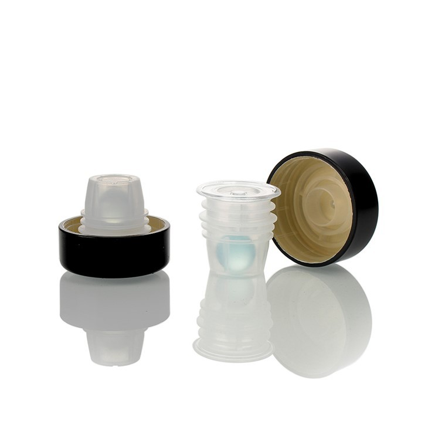
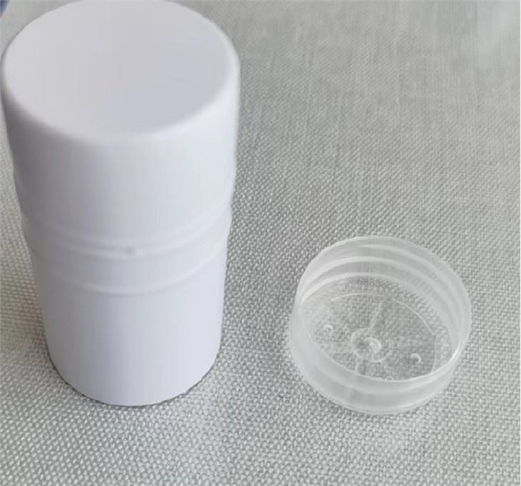

Can twist top caps be used for milk bottles? This is a question that many in the dairy industry and packaging sector often ponder. As a supplier of twist top caps, I'm well - versed in the ins and outs of these closures and their suitability for milk bottles.
The Basics of Twist Top Caps
Twist top caps, also known as screw caps, are a popular choice for a wide range of packaging applications. They offer a convenient and reliable way to seal containers, allowing for easy opening and reclosing. Made from various materials such as plastic, aluminum, and sometimes a combination of both, twist top caps come in different sizes and designs to fit different bottle necks.
Aluminum twist top caps, like the ones available at Aluminium Cap, are known for their durability and excellent barrier properties. They can effectively protect the contents of the bottle from oxygen, moisture, and other contaminants, which is crucial for maintaining the quality and freshness of milk.
Advantages of Using Twist Top Caps for Milk Bottles
Convenience for Consumers
One of the primary advantages of twist top caps for milk bottles is the convenience they offer to consumers. Unlike traditional milk bottle caps that may require a bottle opener or a special tool to remove, twist top caps can be easily opened and closed by hand. This makes it much easier for people of all ages, including children and the elderly, to access the milk.
Preservation of Milk Quality
Milk is a perishable product that is sensitive to oxygen, light, and bacteria. Twist top caps, especially those made from aluminum, provide a tight seal that helps to keep out oxygen and prevent spoilage. They also offer some protection against light, which can cause the breakdown of vitamins and other nutrients in milk. By maintaining a stable environment inside the bottle, twist top caps can extend the shelf - life of milk and ensure that it retains its flavor and nutritional value for a longer period.
Hygiene
Twist top caps are generally more hygienic than other types of caps. Once the cap is removed, it can be easily re - attached to the bottle, reducing the risk of contamination. In addition, the smooth surface of twist top caps is easier to clean compared to caps with complex designs or grooves, where bacteria and dirt can accumulate.
Considerations for Using Twist Top Caps with Milk Bottles
Compatibility with Bottle Design
It's essential to ensure that the twist top caps are compatible with the milk bottles. The size and thread design of the cap must match the bottle neck to provide a proper seal. For example, 28mm GPI Glass Bottle Caps are specifically designed to fit glass bottles with a 28mm neck finish. Using an incompatible cap can lead to leakage, which not only wastes milk but also creates a mess and can cause damage to the packaging and surrounding products.
Environmental Impact
As with any packaging material, the environmental impact of twist top caps is a consideration. While aluminum is a highly recyclable material, the recycling rate of twist top caps may vary depending on local recycling facilities and consumer behavior. Some consumers may also prefer more sustainable packaging options, such as biodegradable or compostable caps. As a supplier, we are constantly exploring ways to develop more environmentally friendly twist top caps without compromising on their performance.
Market Trends and Consumer Preferences
In recent years, there has been a growing trend towards more convenient and sustainable packaging solutions in the dairy industry. Consumers are increasingly looking for milk products that come in easy - to - use packaging with a long shelf - life. Twist top caps meet these requirements and are becoming more popular among milk producers and consumers alike.
In addition, there is a demand for innovative cap designs that can enhance the user experience. For example, some twist top caps now come with features such as pour spouts or measuring cups integrated into the cap, which add to the functionality of the packaging.
Comparison with Other Types of Milk Bottle Caps
Traditional Milk Bottle Caps
Traditional milk bottle caps, such as the waxed paper or plastic snap - on caps, have been used for many years. While they are relatively inexpensive, they lack the convenience and sealing properties of twist top caps. Waxed paper caps can be difficult to remove and may leave residue on the bottle neck, while snap - on caps may not provide a tight enough seal to prevent leakage.
Screw Caps for Wine Bottles
Although Screw Caps For Wine Bottles are similar in design to twist top caps for milk bottles, there are some differences. Wine bottle caps are often designed to provide a long - term seal for a product that may age over time. Milk, on the other hand, has a much shorter shelf - life, so the sealing requirements are different. However, the basic principle of a screw - type closure is the same, and some of the technologies used in wine bottle caps can be adapted for milk bottles.
Our Role as a Twist Top Cap Supplier
As a twist top cap supplier, we understand the unique needs of the dairy industry. We work closely with milk producers to develop customized cap solutions that meet their specific requirements. Whether it's a particular size, color, or design, we have the expertise and resources to produce high - quality twist top caps that are suitable for milk bottles.
We also invest in research and development to improve the performance and sustainability of our caps. We are constantly exploring new materials and manufacturing processes to reduce the environmental impact of our products while maintaining their functionality and quality.
Conclusion
In conclusion, twist top caps can be an excellent choice for milk bottles. They offer convenience, preserve milk quality, and are hygienic. However, it's important to consider factors such as compatibility with bottle design and environmental impact. As a twist top cap supplier, we are committed to providing the best possible solutions for the dairy industry.
If you are a milk producer or involved in the packaging of dairy products and are interested in learning more about our twist top caps, we invite you to contact us for a procurement discussion. We look forward to working with you to find the perfect cap solution for your milk bottles.


References
- "Packaging Technology for Food Products" by R. Paul Singh and Dennis R. Heldman
- Industry reports on dairy packaging trends from market research firms.